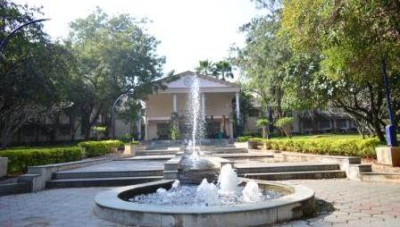

- The College library established in the year 1984, was housed in a classroom with 700 books to start with. In 1986 when the college was shifted to its permanent building, the library occupied a lecture hall in the first floor of the main building. In 1991, it was shifted to the present building named “C.D. MEMORIAL LIBRARY” in honour of the founder correspondent, Thiru. C. Doraisamy.
- In the year 2005, the library buildings were extended from 5 sections to 12 various sections with discussion rooms, modern furniture, and air conditioning.
- The Library transactions are carried out by RFID and Bar Code Technology. It has the facility of KOHA library automation software and Web OPAC-online search. So the library catalogue can be accessed through intranet and internet. And the library is being subscribed to the E-resources. Also, the library has 42 CCTV surveillance cameras for the proper vigilance of the library holdings and to avoid misbehaviors (misplacement, tearing etc) of the users.